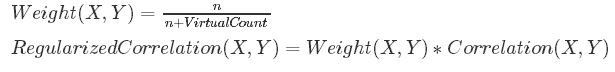
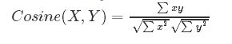

Ever watched a movie on Netflix and then seen a list of recommendations pop up, urging you to watch similar movies? In this assignment, I used the MapReduce framework to recommend similar movies based on the ratings they were given. I used a series of Mappers and Reducers to find similarity metrics for pairs of movies given a large dataset containing movies and user ratings. In essence, I found all the people who rated two movies, made vectors based on ratings for each movies, calculated the similarity metric between the two vectors, and then returned results above a certain threshold.
I used two different datasets, one that had 190,000 ratings and the other that had over a million ratings. On my smaller dataset, I was able to run the map reduce framework locally. For the larger one, I used Amazon's Elastic MapReduce to do my computations and save them on the cloud. Each of these sets had two data files: one for movies (which contained movie id and movie title) and one for ratings (which contained movie id, user id, and rating).
I had five steps of mapping and reducing to go from my initial set up to my final output.
Overall, using the similarity metrics. I was able to clump similar movies together across both datasets. As a reader, we can tell that there were several good matches. For example, in my large dataset. I matched movies like "Free Willy 2: The Adventure Home (1995)" with (the obvious) "Free Willy 3: The Rescue (1997)" and "Home Alone 2: Lost in New York (1992)" movies. It did great on children's movies pairing "Bambi" with movies like "Snow White","Pinocchio", and "Cinderella". It also picked up on series of movies like clumping "Dr. No" with "Tomorrow Never Dies" and other Bond movies.
Similarly, I saw a good performance with on my small dataset. On a more modern note, I saw movies like "127 hours" paired with "Life of Pi", two films that are so similar that even IMDB recommends them. For action movies, it recommended "White House Down" for "A Good Day to Die Hard." It's easy to see that my recommendations picked up on subgenres like superhero films. It recommended both "The Amazing Spider Man" and "Man of Steel" for "Captain America: The First Avenger." Overall, for both datasets, as I read through the similar pairs the movies made much sense that they would be paired together.
I used four different similarity metrics. All of sample data below is of the form movie [movie_title1, movie_title2] and [correlation value, regularized correlation value, cosine similarity value, jaccard similarity value, n, n1, n2] where n is the number of users who rated both movies, n1 the number who rated movie 1, and n2 the number who rated movie 2. As mentioned above, I only returned results that had a regularized correlation value above a threshold of .5.
The correlation value relies on using vectors of user ratings for movies A and B. Correlation is measuring how dependent these two vectors are(more than just mere chance) by evaluating the covariation of the two vectors and dividing by their standard deviations. It is relying on this vector of matches to determine similarity. Another way of stating that is:
Below are some examples of interesting movies that had high correlation values (the first number reported)
Small Dataset
["Epic (2013)", "Planes (2013)"] [0.8021120608016705, 0.5433662347366155, 0.9763248786871007, 0.061764705882352944, 21, 254, 107]
["Fast & Furious (2009)", "The Fast and the Furious (2001)"] [0.8316460831565577, 0.5870442939928643, 0.9953324610039034, 0.2962962962962963, 24, 56, 49]
["Harry Potter and the Chamber of Secrets (2002)", "Harry Potter and the Sorcerer's Stone (2001)"] [0.9133510661896, 0.6958865266206476, 0.9968993161514629, 0.5245901639344263, 32, 37, 56]
Large Dataset
["Mummy's Curse, The (1944)", "Mummy, The (1959)"] [0.87086357217680077, 0.52251814330608048, 0.98446800530973266, 0.13761467889908258, 15, 31, 93]
["Bicycle Thief, The (Ladri di biciclette) (1948)", "Going My Way (1944)"] [0.93402892498860879, 0.5094703227210593, 0.99506163103068745, 0.039603960396039604, 12, 252, 63]
Likewise, the regularized correlation value also looks at the similarity between these two vectors of ratings, but it is a bit stronger in that it considers that some pairs would have very few raters in common. If we don't add noise, we can get high correlation values failing to account for the fact that it's just low numbers of ratings. It is interesting to note that from above certain movies (like Bicycle Thief, Going My Way) had high correlation but lower regularized correlation for the aforementioned reasons. In calculating, regularized correlation, I used a prior correlation value of zero, which gives me the following equation:
Below are some examples of interesting movies that had high regularized correlation values (the second number reported).
Small Dataset ["House at the End of the Street (2012)", "The Purge (2013)"] [0.8640551003337845, 0.5317262155900213, 0.9800837371800873, 0.02631578947368421, 16, 106, 518] ["Fast & Furious 6 (2013)", "Fast Five (2011)"] [0.765453050289863, 0.609238142067442, 0.9939815890231818, 0.03228476821192053, 39, 1170, 77] Large Dataset ["Amityville II: The Possession (1982)", "Nightmare on Elm Street Part 2: Freddy's Revenge, A (1985)"] [0.74285552153348589, 0.60269410237622445, 0.94067028674814779, 0.14982578397212543, 43, 56, 274] ["Apple Dumpling Gang Rides Again, The (1979)", "Apple Dumpling Gang, The (1975)"] [0.79227480238627723, 0.70799024894092855, 0.97149054439044691, 0.32684824902723736, 84, 109, 232]
I also used cosine similarity to evaluate similarity. Cosine similarity is most easily thought about by visualizing the two vectors. This metric is taking the cosine of the angle between the two ratings vector (if they are exactly same have rating of 1, and if are 'perpendicular' have rating of 0)-it is bounded between 0 and 1 since we are working in the positive space. It is similar to the above metrics in that it is evaluating the difference between two vectors, but it is different in that it does so by mapping the vectors to space and using distance (not statistics like covariance and standard deviation) to measure the difference.
Below are some examples of interesting movies that had high regularized correlation values (the third number reported).
Small Dataset ["Percy Jackson: Sea of Monsters (2013)", "The Mortal Instruments: City of Bones (2013)"] [0.6507988564658357, 0.5564801816157146, 0.9689200810942377, 0.12065439672801637, 59, 242, 306] ["Riddick (2013)", "The Chronicles of Riddick (2004)"] [0.789076364767037, 0.5260509098446913, 0.9870124357813821, 0.04056795131845842, 20, 462, 51] ["Taken (2008)", "The Hunger Games: Catching Fire (2013)"] [0.8789953869989584, 0.5273972321993751, 0.9961593936771063, 0.010940919037199124, 15, 98, 1288] Large Dataset ["Boiler Room (2000)", "Psycho (1998)"] [0.57446586732691585, 0.50081639715679849, 0.94858955645371346, 0.086513994910941472, 68, 590, 264] ["Dirty Dozen, The (1967)", "My Man Godfrey (1957)"] [0.68044317408321786, 0.52579699815521375, 0.98445960393693299, 0.044386422976501305, 34, 707, 93]
Lastly, I used the Jaccard Similarity to measure movie pairs. In contrast to the previous metrics, it departs completely from the vector rating model. Instead, it simply looks at the number of people who rated both movies divided by the sum of the number of people who rated each movie. Essentially, this is saying that the mere fact that someone rated two movies makes them similar, regardless of their value. The strength of the similarity is based on the proportion of people who ranked that movie out of the total.
Below are some examples of interesting movies that had high regularized correlation values (the fourth number reported). Something interesting to note is that in general, the Jaccard similarity was much lower than the others. I've included obvious pairs (ones that most people would say are similar) below to highlight this difference.
Small Dataset ["Harry Potter and the Goblet of Fire (2005)", "Harry Potter and the Prisoner of Azkaban (2004)"] [0.6525289349057958, 0.5007780198114247, 0.9926977013138966, 0.6111111111111112, 33, 41, 46] ["Kill Bill: Vol. 1 (2003)", "Kill Bill: Vol. 2 (2004)"] [0.8410653140299218, 0.6541619109121614, 0.9947520934474329, 0.35353535353535354, 35, 78, 56] Large Dataset ["Death Wish 3 (1985)", "Death Wish V: The Face of Death (1994)"] [0.89360517654963445, 0.64538151639695818, 0.97746465842502217, 0.30952380952380953, 26, 72, 38] ["Herbie Goes Bananas (1980)", "Herbie Goes to Monte Carlo (1977)"] [0.86049071863882842, 0.71707559886569039, 0.97705353316185473, 0.32258064516129031, 50, 104, 101]